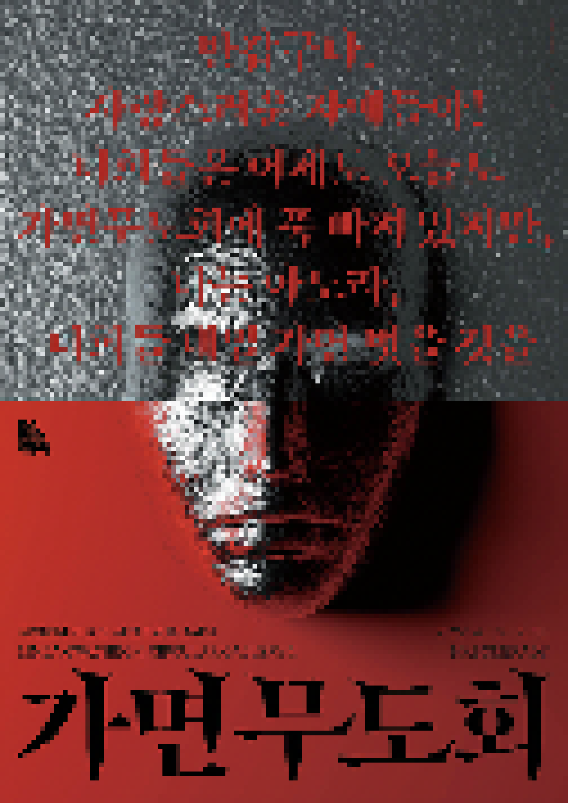

> title
가면무도회
> content
«가면무도회»는 COVID-19 대유행으로 마스크 착용이 별안간 일상이 되어버린 시대에 얼굴을 가리는 행위의 상징적
의미에 대한 현대미술작가들의 오랜 탐구 사례들을 한 자리에 모았다.
‘가면’이라는 주제는 동시대의 시각 환경에서 무시할 수 없는 의미를 가진다. 세계적인 가면무도회나 탈놀이, 각종 영화에 등장하는 가면 쓴 영웅과 악당, 인형극, 그리고 현대인의
일상에 깊숙이 들어온 가상세계 속
아바타나 롤플레잉 게임 등은 현대미술 동시대 작가들에게 가면의 의미와 해석에 대한 다양한 접근을 이끌어내고 있다. 관람객들은 이번 전시에서 현대미술이 해석한 가면의 이미지와 일상가면의 의미와
기능을 비교 감상할 수
있다.
전시에는 권진규, 남관, 크리스티앙 볼탕스키, 성능경, 김정욱, 자크 블라스 등 현대미술 작가들의 작품 40여 점이 출품된다. 과천관 1원형전시실의 구조적 특성을 살려 의도적인
구획을 나누는 대신 관람객들이 작품
간의 관계를 직ㆍ간접적으로 유추할 수 있도록 전시 흐름이 자연스럽게 구성되었다. 또한 탄소 배출 저감 실천의 일환으로 이전 전시에 사용되었던 가벽과 각종 구조물, 조명 등을 최대한 활용했다.
«가면무도회»는 과천관
1원형전시실에서 2022년 4월 13일부터 7월 31일까지 진행된다.
